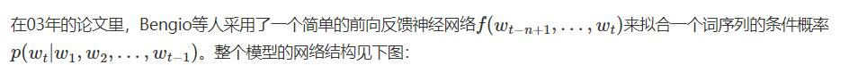
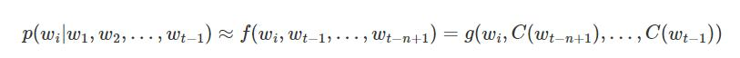
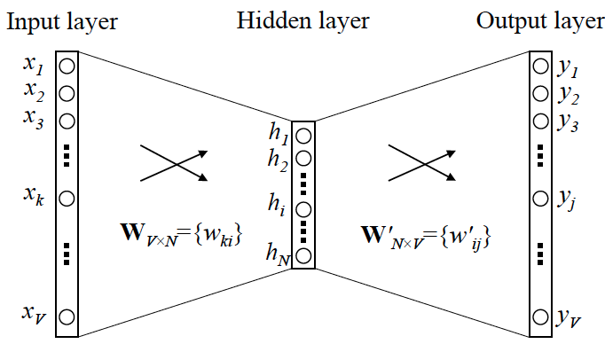
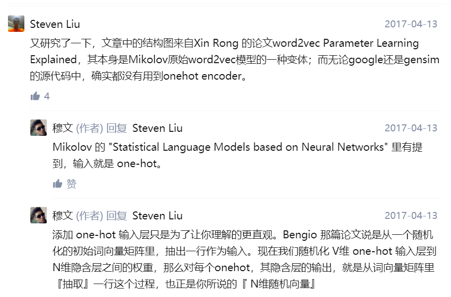
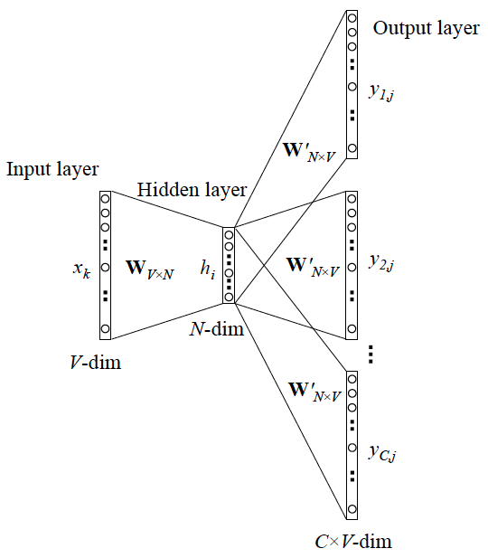
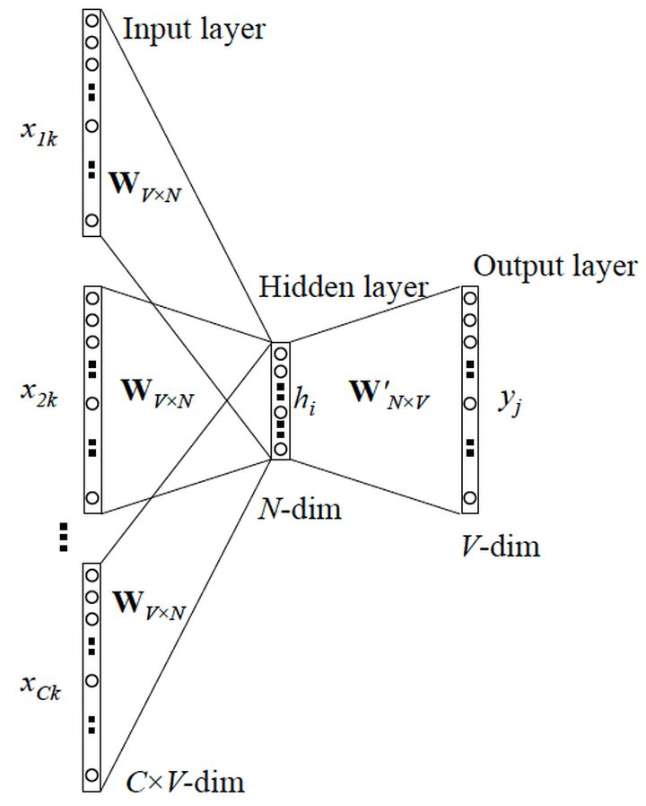
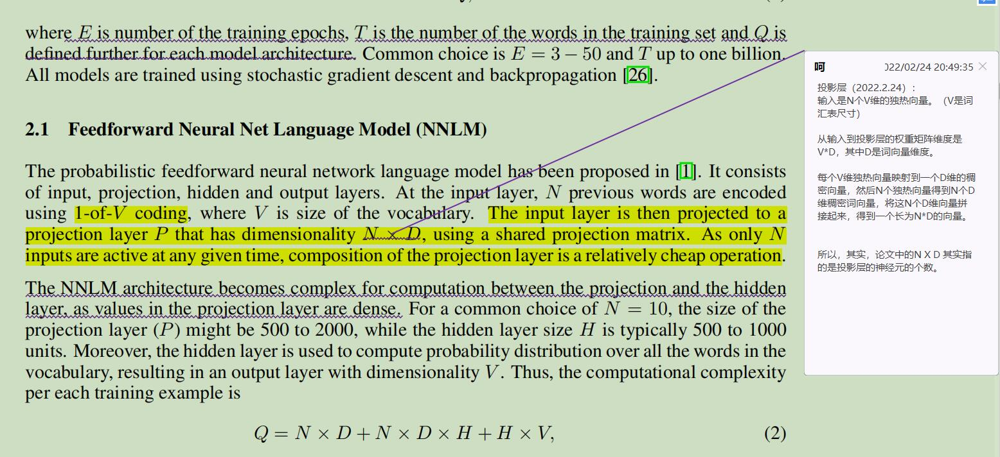
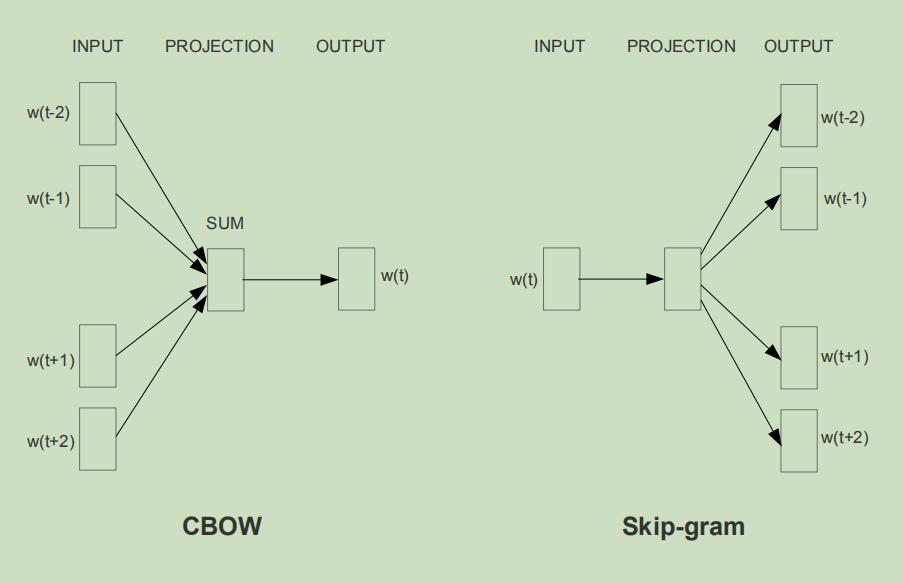

Efficient Estimation of Word Representations in Vector Space
(本文从经验上理解论文，不注重数学推导)
语言模型：
首先回顾一下自然语言处理中的一个基本问题：如何计算一段文本序列在某种语言下出现的概率？
对于一段文本序列：
$$
S=w_1, w_2, … , w_T
$$
语言模型（language model）的目标是估计序列的联合概率，基于链式法则可以转化为条件概率分布的乘积，如下所示：
$$
P(S)=P(w_1, w_2, …, w_T)=\prod_{t=1}^Tp(w_t|w_1, w_2, …, w_{t-1})
$$
即将序列的联合概率转化为一系列条件概率的乘积。问题变成了如何去预测这些给定previous words下的条件概率：
$$
p(w_t|w_1,w_2,…,w_{t-1})
$$
由于其巨大的参数空间，这样一个原始的模型在实际中并没有什么用。 我们可以基于马尔科夫假设来做简化。
什么是马尔科夫假设？
马尔科夫假设是指，每个词出现的概率只跟它前面的少数几个词有关。引入了马尔科夫假设的语言模型，也可以叫做马尔科夫模型。 也就是说，应用了这个假设表明了当前这个词仅仅跟前面几个有限的词相关，因此也就不必追溯到最开始的那个词，这样便可以大幅缩减上述算式的长度。
简化版本：N-gram模型：
$$
p(w_t|w_1, w_2, …, w_{t-1}) \approx p(w_t|w_{t-n+1}, …, w_{t-1})
$$
求解Ngram模型的参数——等价于去统计每个Ngram的条件词频 。
————————————————————————————————
关于ngram小思考（不知道对不对），N-gram总共需要存储V^N个参数（概率值），其中V是词汇表中词元个数。
————————————————————————————————
不过，Ngram模型仍有其局限性。首先，由于参数空间的爆炸式增长，它无法处理更长程的context（N>3）。其次，它没有考虑词与词之间内在的联系性。
这是因为，Ngram本质上是将词当做一个个孤立的原子单元（atomic unit）去处理的。这种处理方式对应到数学上的形式是一个个离散的one-hot向量 。
————————————————————————————————
关于Ngram算法atomic unit的小思考：Ngram算法关于每个词元的处理，并没有考虑其语义信息，只是简单粗暴地将所有词元以N为单位进行排列组合，计算各个gram后任意词元出现的频率，（语料库确定了，Ngram模型其实就确定了）其实，其本质上，是所谓的atomic unit。
————————————————————————————————
于是，人们就自然而然地想到，能否用一个连续的稠密向量去刻画一个word的特征呢？ 如果可以， 我们就可以直接刻画词与词之间的相似度 。word2vec 将每个词映射到一个固定长度的向量，这些向量能更好地表达不同词之间的相似性和类比关系。
Neural Network Language Model（NNLM）
参考：https://www.cnblogs.com/guoyaohua/p/9240336.html
鉴于Ngram等模型的不足，2003年，Bengio等人发表了一篇开创性的文章：A neural probabilistic language model[3]。 在这篇文章里，他们总结出了一套用神经网络建立统计语言模型的框架（Neural Network Language Model，以下简称NNLM） ， 奠定了包括word2vec在内后续研究word representation learning的基础。
NNLM模型的基本思想可以概括如下：
- 假定词表中的每一个word都对应着一个连续的特征向量；
- 假定一个连续平滑的概率模型，输入一段词向量的序列，可以输出这段序列的联合概率；
- 同时学习词向量的权重和概率模型里的参数。


我们可以将整个模型拆分成两部分加以理解：
- 首先是一个线性的Embedding层。它将输入的N−1个one-hot词向量，通过一个共享的D×V的矩阵C，映射为N−1个分布式的词向量（distributed vector）。其中，V是词典的大小，D是Embedding向量的维度（一个先验参数）。C矩阵里存储了要学习的word vector。
- 其次是一个简单的前向反馈神经网络g。它由一个tanh隐层和一个softmax输出层组成。通过将Embedding层输出的N−1个词向量映射为一个长度为V的概率分布向量，从而对词典中的word在输入context下的条件概率做出预估：
$$
p(w_i|w_1,w_2,…,w_{t-1}) \approx f(w_i, w_{t-1}, …, w_{t-n+1}) = g(w_i, C(w_{t-n+1}), …, C(w_{t-1}))
$$

Word2vec
原始的NNLM模型的训练其实可以拆分成两个步骤：
- 用一个简单模型训练出连续的词向量；
- 基于词向量的表达，训练一个神经网络模型。
而NNLM模型的计算瓶颈主要是在第二步。
如果我们只是想得到word的连续特征向量，可以对第二步里的神经网络模型进行简化呢。
Mikolov 移除前向反馈神经网络中非线性的hidden layer，直接将中间层的Embedding layer与输出层的softmax layer连接；

当模型训练完后，最后得到的其实是神经网络的权重，比如现在输入一个 x 的 one-hot encoder: [1,0,0,…,0]，则在输入层到隐含层的权重里，只有对应 1 这个位置的权重被激活，这些权重的个数，跟隐含层节点数是一致的，从而这些权重组成一个向量 Wx 来表示x，而因为每个词语的 one-hot encoder 里面 1 的位置是不同的，所以，这个向量 Wx 就可以用来唯一表示 x。
注意：上面这段话说的就是 Word2vec 的精髓！此处依靠矩阵和向量乘法的行列向量空间角度来理解，独热向量只会激活词向量矩阵中的某一列或者某一行。
————————————————————————————————————————
困惑已久的解答：
Q. gensim 和 google的 word2vec 里面并没有用到onehot encoder，而是初始化的时候直接为每个词随机生成一个N维的向量，并且把这个N维向量作为模型参数学习；所以word2vec结构中不存在文章图中显示的将V维映射到N维的隐藏层。
A. 其实，本质是一样的，加上 one-hot encoder 层，是为了方便理解，因为这里的 N 维随机向量，就可以理解为是 V 维 one-hot encoder 输入层到 N 维隐层的权重，或者说隐层的输出（因为隐层是线性的）。每个 one-hot encoder 里值是 1 的那个位置，对应的 V 个权重被激活，其实就是『从一个V*N的随机词向量矩阵里，抽取某一行』。学习 N 维向量的过程，也就是优化 one-hot encoder 层到隐含层权重的过程

————————————————————————————————————————
Skip-gram 和 CBOW 模型
上面我们提到了语言模型
- 如果是用一个词语作为输入，来预测它周围的上下文，那这个模型叫做『Skip-gram 模型』
- 而如果是拿一个词语的上下文作为输入，来预测这个词语本身，则是 『CBOW 模型』


1 Introduction
很多NLP任务将word视为atomic units， 比如n-gram。
这种表示方式有一定优势：简洁、健壮性。此外，据观察，简单模型+大量数据的训练效果往往比复杂模型+少量数据的表现更突出。
这种表示方式也有很多缺点：比如类似于one-hot这样的编码方式用word在vocabulary中的indices作为编码依据，这种方式忽略了word之间的相似性概念。而且，很多任务没有那么多数据。
随着ML技术兴起，我们可以在更复杂的模型上训练更复杂的数据，word2vec应运而生。
本文提出的技术，相似的单词在word vector在vector space中不仅相近，而且其存在多维度的相似（语义，语法等等维度）
NNLM : a feedforward neural network with a linear projection layer and a non-linear hidden layer was used to learn jointly the word vector representation and a statistical language model.
在各种大型corpora中使用不同模型训练word vector,一方面我们获得了word vector本身，此外，word vector可以作为输入特征提供给不同NLP任务，能够改善其表现。
2 Model Architectures
2.1 Feedforward Neural Net Language Model (NNLM)
本模型包括输入层、投影层、隐藏层、输出层。N个word使用 1-V编码，V是vocabulary大小。输入层映射到投影层P，其维度为N*D且共享投影矩阵。（此处具体模型解耦不确定，查一查。）

2.2 Recurrent Neural Net Language Model (RNNLM)
RNNLM可以有效学习深层的复杂模式（浅层模型学不到的）。
RNN 将隐藏层指向自己，这使得其具备短时记忆，隐层节点可以记住过去的信息，并且可以通过当前的输入和隐层信息来更新。
3 New Log-linear Models
